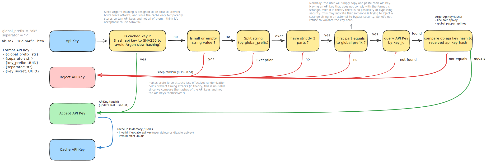

FastAPI Api Key¶


fastapi-api-key provides a backend-agnostic library that provides a production-ready, secure API key system, with optional FastAPI and Typer connectors.
Links¶
- Documentation: https://athroniaeth.github.io/fastapi-api-key/
- PyPI package: https://pypi.org/project/fastapi-api-key/
Features¶
- Security-first: secrets are hashed with a salt and a pepper, and never logged or returned after creation
- Prod-ready: services and repositories are async, and battle-tested
- Agnostic hasher: choose between Argon2 (default) or Bcrypt hashing strategies (with caching support)
- Agnostic backend: abstract repository pattern, currently with SQLAlchemy implementation
- Connectors: FastAPI router and Typer CLI for API key management
- Envvar support: easily configure peppers and other secrets via environment variables
- Scopes support: assign scopes to API keys for fine-grained access control
Standards compliance¶
This library try to follow best practices and relevant RFCs for API key management and authentication:
- RFC 9110/7235: Router raise 401 for missing/invalid keys, 403 for valid but inactive/expired keys
- RFC 6750: Supports
Authorization: Bearer <api_key>header for key transmission (also supports deprecatedX-API-Keyheader andapi_keyquery param)
How API Keys Work¶
API Key Format¶
This is a classic API key if you don't modify the service behavior:
Structure:
{global_prefix}-{separator}-{key_id}-{separator}-{key_secret}
Example:
ak-7a74caa323a5410d-mAfP3l6yAxqFz0FV2LOhu2tPCqL66lQnj3Ubd08w9RyE4rV4skUcpiUVIfsKEbzw
- "-" separators so that systems can easily split
- Prefix
ak(for "Api Key"), to identify the key type (useful to indicate that it is an API key). - 16 first characters are the identifier (UUIDv4 without dashes)
- 64 last characters are the secret (random alphanumeric string)
When verifying an API key, the service extracts the identifier, retrieves the corresponding record from the repository, and compares the hashed secret. If found, it hashes the provided secret (with the same salt and pepper) and compares it to the stored hash. If they match, the key is valid.
Schema validation¶
Here is a diagram showing what happens after you initialize your API key service with a global prefix and delimiter when you provide an API key to the .verify_key() method.

Additional notes¶
- Python 3.9+ is required.
- The library issues warnings if you keep the default pepper; always configure a secret value outside source control.
- Never log peppers or plaintext API keys, change the pepper of prod will prevent you from reading API keys
Development helpers¶
Run the curated lint suite with make lint; it chains Ruff format/check, Ty, Pyrefly, and Bandit via uv run so CI and local runs match. Install make with sudo apt install make on Debian/Ubuntu or choco install make (or the binary from Git for Windows) before executing commands from the repository root.
What to read next¶
- Head to the Quickstart to wire the service in a REPL or script.
- Browse the Usage section to see example applications that ship with the project.